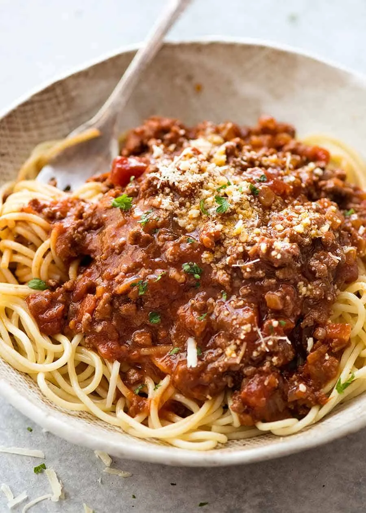
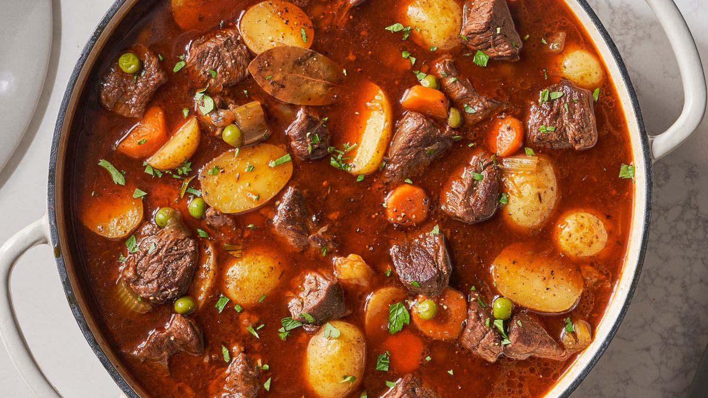

Spaghetti Bolognese

- 250g spaghetti
- 300g ground beef
- 1 onion, chopped
- 2 cloves garlic, minced
- 1 carrot, grated
- 1 celery stalk, chopped
- 400g canned tomatoes
- 1 tbsp tomato paste
- 1/2 cup beef or vegetable broth
- 1/2 cup red wine (optional)
- 1 tsp dried oregano
- Salt and pepper to taste
- Fresh basil leaves for garnish
- Grated Parmesan cheese for serving
- Cook spaghetti according to package instructions.
- In a large skillet, brown ground beef over medium-high heat.
-
Add onion, garlic, carrot, and celery. Cook until vegetables are
softened.
-
Stir in canned tomatoes, tomato paste, broth, and red wine (if using).
-
Season with oregano, salt, and pepper. Simmer for 20-30 minutes.
-
Serve sauce over cooked spaghetti. Garnish with basil leaves and
Parmesan cheese.
Chicken Alfredo Pasta

- 300g fettuccine pasta
- 2 chicken breasts, sliced
- 2 tbsp butter
- 2 cloves garlic, minced
- 1 cup heavy cream
- 1/2 cup grated Parmesan cheese
- Salt and pepper to taste
- Fresh parsley for garnish
- Cook fettuccine pasta according to package instructions.
- In a large skillet, melt butter over medium heat.
- Add chicken slices and cook until browned and cooked through.
- Add garlic and sauté until fragrant.
- Pour in heavy cream and bring to a simmer.
- Stir in Parmesan cheese until sauce is smooth and thickened.
- Season with salt and pepper.
- Toss cooked pasta with sauce until well coated.
- Serve hot, garnished with fresh parsley.
Beef Stew

- 500g stewing beef, cubed
- 2 tbsp olive oil
- 1 onion, chopped
- 2 carrots, sliced
- 2 potatoes, peeled and cubed
- 2 cloves garlic, minced
- 2 cups beef broth
- 1 cup red wine (optional)
- 1 can diced tomatoes
- 1 tsp dried thyme
- Salt and pepper to taste
- Fresh parsley for garnish
- In a large pot, heat olive oil over medium-high heat.
- Add beef cubes and brown on all sides.
-
Add onion, carrots, potatoes, and garlic. Sauté until vegetables are
tender.
- Pour in beef broth and red wine (if using). Bring to a boil.
- Stir in diced tomatoes and dried thyme.
- Season with salt and pepper.
-
Cover and simmer over low heat for 1.5 to 2 hours, stirring
occasionally.
- Adjust seasoning if needed.
- Serve hot, garnished with fresh parsley.